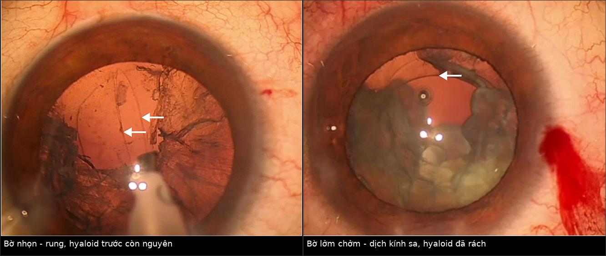
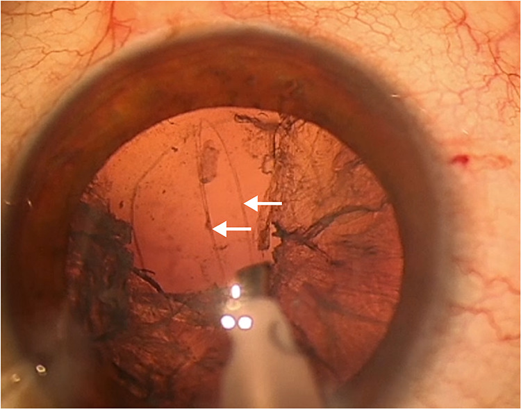
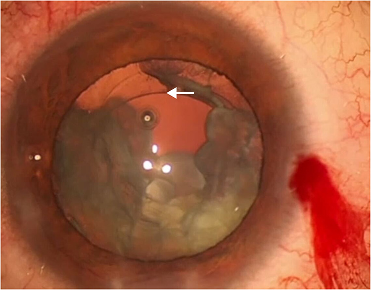
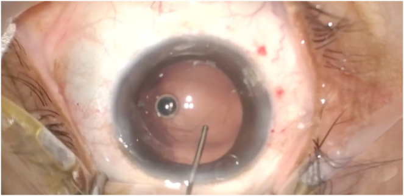

1883 — Rách bao sau trong phaco trên mắt ĐÃ cắt dịch kính: "flutter sign", sa dịch kính và chọn vị trí IOL / Posterior capsule rupture in the vitrectomized eye
Tags: pattern:rach-bao-sau pattern:sa-dich-kinh pattern:mat-nhan-roi vung:the-thuy-tinh vung:tien-phong protocol:phaco protocol:PPV protocol:AS-OCT score:TCS
Mức chắc chắn (certainty): tổng hợp y văn (literature synthesis) — ghép 1 đoàn hệ 2.719 mắt về PCR/sa dịch kính (Clin Ophthalmol 2026, PMC13055850), 1 nghiên cứu 20 mắt về flutter sign (Clin Ophthalmol 2025, PMC12665237, CC BY-NC 4.0), 1 ca IOL 1 mảnh đặt trong bao sau khi rách (Int J Surg Case Rep 2026, PMC13166750, CC BY 4.0), 1 đoàn hệ 87 mắt phaco sau PPV (Clin Ophthalmol 2018, PMC5973444), 1 phân tích gộp 23 nghiên cứu về thời điểm PPV khi rơi mảnh nhân (J Cataract Refract Surg 2014, PMC4242692) và 1 đoàn hệ 246 mắt (Am J Ophthalmol 2023, PMC9899933).
Câu chốt: ở mắt đã cắt dịch kính, bao sau không còn "đệm" dịch kính phía sau và màng hyaloid trước có thể đã mất → rách lan nhanh, dịch kính sa ra sớm hơn và mảnh nhân rơi tự do vào buồng dịch kính. Vì vậy kỹ thuật mổ thay đổi (giảm lưu lượng, giữ tiền phòng ổn định, nhận diện bờ rách nhọn–rung (flutter) hay lởm chởm–tĩnh (scalloped)) và vị trí IOL là quyết định trung tâm: trong bao → rãnh thể mi (IOL 3 mảnh) → cố định củng mạc.
1. Tổng quan bệnh học – cơ chế hình ảnh
1.1 Vì sao mắt đã cắt dịch kính là "mắt khó"
- Mất hỗ trợ cơ học phía sau: bao sau thể thủy tinh là màng đáy không có tế bào, mỏng nhất ở cực sau; bình thường nó tựa trên màng hyaloid trước + thể thủy tinh. Sau PPV (pars plana vitrectomy) — đặc biệt khi bóc màng giới hạn + lấy dịch kính trung tâm — màng hyaloid trước có thể không còn, nên áp lực tưới (infusion) tác động trực tiếp lên mặt sau bao và không có mô đỡ khi đầu tip tạo áp lực.
- Tiền phòng dao động mạnh (LIDRS): ở mắt đã PPV hoặc cận thị cao, lens–iris diaphragm retropulsion syndrome hay gặp: tiền phòng sâu bất thường khi bơm dịch, rồi sụp đột ngột khi ngừng → đầu tip hút vào bao sau/zonule. Đây là cơ chế rách bao sau và đứt zonule "không báo trước" (PMC10058855).
- Zonule yếu sẵn: mắt đã mổ bong võng mạc, cận thị cao, chấn thương, dùng dầu/gas → dây chằng Zinn mỏng, bao sau xơ–dày không đều.
- Không có "hàng rào" dịch kính: khi bao rách, mảnh nhân/vỏ rơi ngay vào buồng dịch kính thay vì bị màng hyaloid giữ lại → retained lens fragments (RLF) và viêm – tăng nhãn áp – phù hoàng điểm về sau.
1.2 Vì sao "flutter" phân biệt được rách đơn thuần với sa dịch kính
- Màng hyaloid trước còn nguyên → bờ rách nhọn, căng, "rung" (flutter) theo dòng tưới, dịch kính không thoát ra. Nghiên cứu 20 mắt: 11 mắt có bờ nhọn rung, không cần cắt dịch kính trước, 5 mắt đặt IOL trong bao, 6 mắt đặt rãnh, 100% đạt thị lực 20/20 (PMC12665237).
- Màng hyaloid trước đã rách → bờ lởm chởm, mất căng, tĩnh (scalloped), kèm dịch kính sa dạng "keo trong" bắt triamcinolone. Cả 9 mắt nhóm này phải cắt dịch kính trước + IOL rãnh thể mi; 3 mắt có mảnh vỏ/nhân di chuyển ra sau, 1 mắt phải mổ lại, 2 mắt thị lực 20/30 (PMC12665237).
- Vì sao nhìn thấy "rung": bờ bao là màng đàn hồi; khi còn màng hyaloid phía sau, sức căng mặt phân cách giữ bờ rách căng và dao động theo xung dòng chảy. Khi hyaloid mất, dịch kính thoát làm bờ mất căng, cuộn lại → mất hiện tượng rung. Đây là dấu hiệu động học tại mổ, không phải dấu hiệu trên ảnh.
1.3 Ngưỡng định lượng – dịch tễ và kết cục
| Đại lượng | Số liệu | Nguồn |
|---|---|---|
| Rách bao sau (PCR) ± sa dịch kính | 52/2.719 mắt = 1,9% (45 PCR, trong đó 5 kèm sa dịch kính; 7 sa dịch kính đơn thuần do zonule) | PMC13055850 |
| Yếu tố nguy cơ độc lập | PEX: OR 2,38 (p = 0,013; thô 2,72; p = 0,003) | PMC13055850 |
| Điểm nguy cơ trước mổ | TCS ≥ 3: OR 2,38 (p = 0,002) khi đơn biến; 1,79 (p = 0,057) khi đa biến — chưa đủ mạnh để một mình quyết định | PMC13055850 |
| Gây tê tại chỗ vs toàn thân | OR 0,51 (p = 0,019) — giảm nguy cơ | PMC13055850 |
| Tỉ lệ mảnh nhân/vỏ tồn lưu (RLF) | 1,47% trong 10 năm tại một trung tâm châu Á (282 mắt bệnh / 289 mắt chứng); nguy cơ cao hơn ở đái tháo đường, đục nhân dày, đục bao trước | PMC9535911 |
| Phaco sau PPV (87 mắt) | Phù hoàng điểm 17,2% (trung bình 42 ngày), PCO 13,8% (14 tháng), tăng nhãn áp 11,5%, viêm màng bồ đào 1,1%; thị lực 20/50 → 20/25, 91% tăng ≥ 2 dòng, 95% đạt ≥ 20/40 | PMC5973444 |
| Phù hoàng điểm sau phaco ở mắt đã PPV | Cao hơn khi PPV vì màng biểu mô (ERM): phù sau PPV 12,8% (ERM) vs 1% (bong võng mạc) | PMC11753465 |
| Thời điểm PPV khi rơi mảnh nhân | 246 mắt: 57% cùng ngày, 13% trong tuần, 30% sau 1 tuần — không khác biệt thị lực cuối và không khác tỉ lệ bong võng mạc | PMC9899933 |
| PPV cùng ngày vs muộn (gộp 23 nghiên cứu) | Cùng ngày tốt hơn "tất cả nhóm muộn" (chênh nguy cơ thị lực không tốt 16,2%; 95% CI 0,8–31,5), nhưng không khác so với PPV sớm 3–14 ngày | PMC4242692 |
2. Mẫu hình + chẩn đoán phân biệt theo mức hỗ trợ bao sau (gamut)
Sau khi bao sau rách, câu hỏi không còn là "rách hay không" mà là còn bao nhiêu hỗ trợ cho IOL:
- Bao sau nguyên vẹn — đặt IOL trong bao (kể cả IOL 1 mảnh cao cấp; ca EDOF đặt trong bao sau rách vẫn đạt logMAR 0,0 tháng 6, nhãn áp 10–15 mmHg, PMC13166750).
- Rách khu trú + hyaloid trước nguyên vẹn (flutter) — có thể vẫn trong bao nếu rách nhỏ, ngoại vi, không dịch kính (5/11 mắt trong nghiên cứu), hoặc rãnh thể mi.
- Rách + sa dịch kính (scalloped) — cắt dịch kính trước bắt buộc + IOL 3 mảnh rãnh thể mi.
- Mất hỗ trợ bao sau (rách lan ra zonule, mất > 1/2 chu vi bao) → cố định củng mạc / iris-claw.
- Mảnh nhân rơi (dropped nucleus) — PPV (cùng ngày nếu có ekip võng mạc; nếu không, trong 3–14 ngày).
- Rách bao sau phát hiện MUỘN sau mổ — tiền phòng nông, IOL lệch, phù hoàng điểm, hoặc mảnh nhân trong buồng dịch kính trên siêu âm B (dấu hiệu tăng âm di động) / AS-OCT (IOL–bao).
Mnemonic "3 chữ S" khi đối diện rách bao sau: Support (còn bao/zonule?), Softern (dịch kính sa?), Site (đặt IOL ở đâu?).
3. Bảng so sánh phân biệt (ma trận đối chiếu)
| Thực thể (mức hỗ trợ) | Hình ảnh / dấu hiệu tại mổ và trên ảnh | Chốt vào (rule-in) | Chốt loại (rule-out) | Gợi ý xác nhận |
|---|---|---|---|---|
| Rách khu trú, hyaloid trước nguyên vẹn | Bờ rách nhọn, rung (flutter) theo dòng tưới; không có "keo" dịch kính khi bôi triamcinolone | Bờ rung + không dịch kính → có thể không cần cắt dịch kính trước và đặt IOL trong bao | Bờ lởm chởm, tĩnh + dịch kính sa → không được đặt trong bao | Video mổ; quan sát bờ rách ở lưu lượng thấp (flutter chỉ thấy khi dòng ổn định) |
| Rách + sa dịch kính (hyaloid trước đã rách) | Bờ scalloped, dịch kính dạng keo bắt triamcinolone, đồng tử hẹp lại khi hút | Dịch kính sa qua bờ rách = phải cắt dịch kính trước | Dịch kính chỉ ở vết mổ (không qua bao) → xử trí tại chỗ, không mở rộng | Triamcinolone không pha bôi mặt sau; "dry vitrectomy" |
| Mất hỗ trợ bao sau | Không còn vành bao ≥ 1/2 chu vi; AS-OCT: IOL lệch trục, mép quang học trong tiền phòng | Không đủ vành bao → cố định củng mạc/iris-claw | Còn vành bao 3–4 mm liên tục → rãnh thể mi | AS-OCT tiền phòng, đo góc lệch IOL, khoảng cách IOL–bao |
| Mảnh nhân rơi (RLF) | Siêu âm B: đám tăng âm di động trong dịch kính; AS-OCT không thấy bao sau; tiền phòng viêm | Mảnh nhân/vỏ trong buồng dịch kính = PPV | Tăng âm cố định, bám võng mạc → có thể là sẹo/màng, không phải mảnh nhân | B-scan động (đổi tư thế), không dùng CT/MRI |
| Rách bao sau + phù hoàng điểm sau mổ | OCT: nang trong võng mạc, dày trung tâm hoàng điểm; mặt cắt qua IOL thấy mép bao | Phù hoàng điểm có nang + tiền sử PCR | Phù nhẹ không nang sau mổ 1–2 tuần = sinh lý | OCT hoàng điểm 4–6 tuần (đỉnh ~42 ngày) |

Trái: bờ rách nhọn, mũi tên chỉ mép bao — màng hyaloid trước còn. Phải: bờ lởm chởm + dịch kính sa, mũi tên chỉ màng hyaloid đã rách. Nguồn: Clin Ophthalmol 2025 (PMC12665237), CC BY-NC 4.0; ảnh ghép letterbox, không crop.3.1 Ba câu hỏi chốt ngay khi thấy bao sau rách ở mắt đã PPV
- Bờ rách rung hay tĩnh? Rung → hyaloid trước còn → có thể giữ trong bao; tĩnh + lởm chởm → phải cắt dịch kính trước.
- Có mảnh nhân/vỏ nào đã ra sau chưa? Ở mắt đã PPV không có dịch kính đỡ, mảnh rơi nhanh và xa hơn → ngừng hút ngay, đánh giá bằng B-scan nếu không nhìn thấy.
- Còn vành bao để đặt rãnh không? Không → cố định củng mạc; không đặt IOL 1 mảnh vào rãnh (xem mục 5).
4. Protocol — trước, trong và sau mổ + thuật toán
4.1 Trước mổ
- Đánh giá nguy cơ: PEX (OR 2,38), TCS ≥ 3, mắt đã PPV, cận thị cao, đục nhân dày, đục bao trước, đái tháo đường (RLF 1,47% toàn bộ, cao hơn ở nhóm này).
- Sinh trắc lại: ở mắt đã PPV, chiều dài trục và độ sâu tiền phòng thay đổi; dùng cùng công thức/thiết bị với mắt còn lại để so sánh, ghi rõ công thức + hằng số A vào hồ sơ (yếu tố quyết định khi phải đổi từ trong bao sang rãnh/cố định).
- Tư vấn trước mổ: nêu nguy cơ PCR ~2%, phù hoàng điểm 17,2% sau phaco ở mắt đã PPV, khả năng mổ 2 thì nếu rơi nhân.
4.2 Trong mổ — thứ tự kiểm soát
- Giữ tiền phòng ổn định: cohesive OVD đủ, giảm lưu lượng tưới–hút, tránh bơm mạnh (LIDRS).
- Nhuộm bao bằng trypan blue để thấy bờ rách.
- Nhận diện flutter sign (xem mục 1.2) — quyết định có/không cắt dịch kính trước.
- Nếu có dịch kính: cắt dịch kính trước "khô" (không bơm BSS liên tục), bôi triamcinolone để lộ dịch kính còn sót, cắt sạch tới bờ bao và vết mổ.
- Quyết định vị trí IOL theo vành bao (mục 2); IOL 3 mảnh cho rãnh, không dùng IOL 1 mảnh cho rãnh.
- Nếu mảnh nhân rơi: ngừng thao tác, không cố gắng lấy bằng đầu tip trong tiền phòng; chuyển PPV (cùng ngày nếu có ekip; nếu không, 3–14 ngày — không khác biệt kết cục so với cùng ngày).
4.3 Sau mổ
- Ngày 1: nhãn áp, tiền phòng, vị trí IOL (đèn khe), soi mép bao.
- 4–6 tuần: OCT hoàng điểm (đỉnh phù hoàng điểm sau phaco ở mắt đã PPV là ~42 ngày) + AS-OCT tiền phòng đánh giá IOL trong bao/rãnh, độ nghiêng, khoảng cách tới bao.
- Theo dõi dài hạn: PCO 13,8% (trung vị 14 tháng), tăng nhãn áp 11,5%.
flowchart TD
A[Rách bao sau trong phaco, mắt đã PPV] --> B{Qua bờ rách có dịch kính?}
B -->|Không, bờ nhọn rung| C{Còn vành bao ngoại vi?}
B -->|Có, bờ lởm chởm| D[Cắt dịch kính trước khô + triamcinolone]
C -->|Có| E[IOL trong bao]
C -->|Không| F[IOL 3 mảnh rãnh thể mi]
D --> G{Còn vành bao >= 1/2 chu vi?}
G -->|Có| F
G -->|Không| H[Cố định củng mạc / iris-claw]
A --> I{Mảnh nhân rơi vào dịch kính?}
I -->|Có| J[PPV: cùng ngày hoặc 3-14 ngày]
E --> K[OCT hoàng điểm 4-6 tuần + AS-OCT]
F --> K
H --> K
J --> K
4.4 Bẫy "giá trị của chờ đợi" khi rơi mảnh nhân
- 246 mắt (Bascom Palmer): PPV cùng ngày 57%, trong tuần 13%, sau 1 tuần 30% — không khác thị lực cuối, không khác tỉ lệ bong võng mạc (PMC9899933).
- Phân tích gộp 23 nghiên cứu: PPV cùng ngày tốt hơn "mọi nhóm muộn" (chênh 16,2% nguy cơ thị lực không tốt) nhưng không khác PPV 3–14 ngày → "sớm" quan trọng hơn "ngay lập tức" (PMC4242692).
- Hệ quả thực hành: không cần mổ cấp cứu ban đêm nếu không có dấu hiệu viêm/tăng nhãn áp nặng; đặt lịch trong 3–14 ngày với ekip võng mạc là hợp lý.
5. Biến thể bình thường và cạm bẫy
- "Không thấy dịch kính" ở mắt đã PPV ≠ an toàn: màng hyaloid trước có thể đã mất cùng dịch kính, nên không có "keo" để thấy — mảnh nhân vẫn có thể rơi tự do. Đánh giá bằng B-scan, không dựa vào cảm giác "sạch".
- Bỏ qua bờ scalloped: nếu không cắt dịch kính trước, dịch kính dính vào vết mổ → phù hoàng điểm, bong võng mạc, viêm nội nhãn; bờ tĩnh là dấu hiệu phải hành động, không phải "đẹp".
- IOL 1 mảnh đặt rãnh thể mi: quang học 1 mảnh có haptic cứng, góc nghiêng → chafing thể mi, pigment dispersion, UGH, nghiêng IOL; chỉ dùng IOL 3 mảnh cho rãnh.
- LIDRS giả "tiền phòng tốt": tiền phòng sâu bất thường rồi sụp khi ngừng bơm — đừng tăng lưu lượng để "mở" tiền phòng, mà giảm lưu lượng + thêm OVD.
- AS-OCT ngay sau mổ: phù giác mạc làm mờ mặt cắt, dễ đọc sai vị trí IOL → hẹn AS-OCT khi giác mạc trong (thường 2–4 tuần).
- Rách bao sau muộn (sau mổ) hay bị gọi là "phù hoàng điểm vô căn": luôn soi mép bao + AS-OCT trước khi kết luận.
6. Tự lượng giá — Blind Quiz
Ca 1 — mắt đã PPV vì bong võng mạc, phaco, thấy bờ rách ở trung tâm ảnh. Quan sát trước khi mở đáp án.

- Câu hỏi: Bờ rách rung hay tĩnh? Màng hyaloid trước còn hay mất? Có bắt buộc cắt dịch kính trước không?
Bấm để hiện đáp án (findings + chẩn đoán)
- Findings: hai mũi tên chỉ mép bao sau nhọn, căng, rung theo xung dòng tưới — không có dịch kính sa.
- Chẩn đoán: rách bao sau đơn thuần, màng hyaloid trước nguyên vẹn → không cần cắt dịch kính trước; trong nghiên cứu nguồn 11 mắt như vậy, 5 mắt đặt IOL trong bao, 6 mắt rãnh, tất cả đạt 20/20.
- Nguồn ảnh: Clin Ophthalmol 2025;19:4313–4321 (PMC12665237), CC BY-NC 4.0.
Ca 2 — cùng bối cảnh, bờ rách khác hẳn.

- Câu hỏi: Dấu hiệu nào nói màng hyaloid trước đã rách? Bước tiếp theo bắt buộc là gì, và đặt IOL ở đâu?
Bấm để hiện đáp án
- Findings: bờ lởm chởm, tĩnh, mũi tên chỉ màng hyaloid đã rách, dịch kính sa vào tiền phòng.
- Xử trí: cắt dịch kính trước (khô, có triamcinolone) + IOL 3 mảnh rãnh thể mi; nhóm này 9/9 mắt phải làm vậy, 1 mắt cần mổ lại vì mảnh nhân lớn.
- Nguồn ảnh: PMC12665237, CC BY-NC 4.0.
Ca 3 — rách bao sau phát hiện sau khi đã lấy nhân, trước khi đặt IOL.

- Câu hỏi: Với vị trí rách này, đặt IOL trong bao có được không? Điều kiện nào khiến câu trả lời là "có"?
Bấm để hiện đáp án
- Findings: rách bao sau khu trú, vành bao ngoại vi còn liên tục; không thấy dịch kính.
- Chẩn đoán/xử trí: ca nguồn đặt IOL 1 mảnh EDOF trong bao; tháng 6 logMAR 0,0, nhãn áp 15 mmHg. Điều kiện: rách nhỏ, ngoại vi, không dịch kính, vành bao còn — nếu không đủ thì chuyển rãnh (IOL 3 mảnh) hoặc cố định củng mạc.
- Nguồn ảnh: Int J Surg Case Rep 2026;138(5):1679–1682 (PMC13166750), CC BY 4.0.
Bài liên quan chéo
- 1882 – Phù hoàng điểm do prostaglandin sau phaco
- 1877 – PFCL tồn lưu dưới võng mạc
- 1425 – Viêm nội nhãn sau tiêm nội nhãn
- 1455 – Anti-VEGF trên mắt đã cắt dịch kính
- 1873 – Bao sau đục thứ phát trên mắt bơm dầu (YAG)
Không dùng để chẩn đoán độc lập khi chưa có người hướng dẫn.